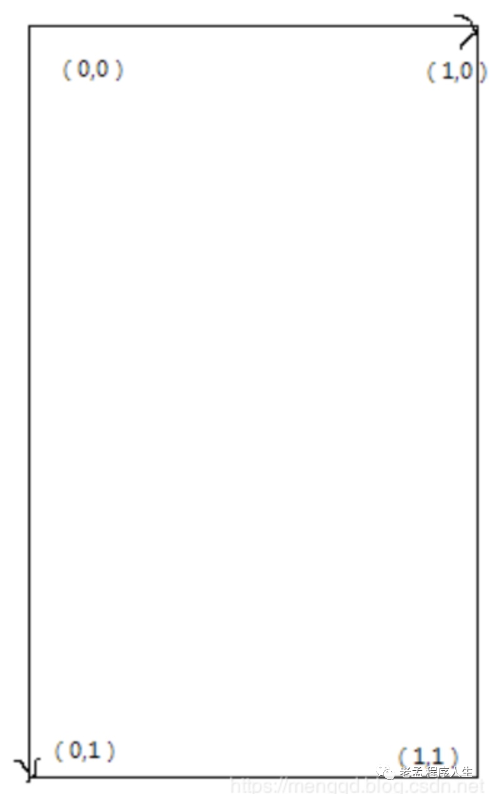

在OpenGL ES中绘制一张图片需要使用到纹理（texture），绘制纹理步骤如下：
绘制纹理的shader需要顶点数据、纹理顶点数据和纹理。Vertex Shader代码如下：
attribute vec4 a_Position;
attribute vec2 a_TexCoordinate;
varying vec2 v_TexCoord;
void main() {
v_TexCoord = a_TexCoordinate;
gl_Position = a_Position;
}
a_Position：顶点数据。a_TexCoordinate：纹理顶点数据。v_TexCoord：varying类型，v_TexCoord是a_TexCoordinate的值，传递给Fragment Shader使用。
Fragment Shader代码如下：
precision mediump float;
uniform sampler2D u_Texture;
varying vec2 v_TexCoord;
void main() {
gl_FragColor = texture2D(u_Texture, v_TexCoord);
}
u_Texture：纹理，其类型是sampler2D。v_TexCoord：Vertex Shader传递过来的纹理顶点数据，texture2D是OpenGL ES内置函数，称之为采样器，获取纹理上指定位置的颜色值。
创建program的过程在《OpenGL ES for Android 环境搭建》中详细介绍，这里不在介绍，直接使用封装好的工具类，代码如下：
private fun createProgram() {
var vertexCode = AssetsUtils.readAssetsTxt(
context = context,
filePath = "glsl/bitmap_vs.glsl"
)
var fragmentCode = AssetsUtils.readAssetsTxt(
context = context,
filePath = "glsl/bitmap_fs.glsl"
)
mProgramHandle = GLTools.createAndLinkProgram(vertexCode, fragmentCode)
}
bitmap_vs.glsl和bitmap_fs.glsl是assets/glsl目录下文件，分别代表顶点shader和纹理shader。
AssetsUtils.readAssetsTxt为工具类，读取asset文件下的文件返回String类型，代码如下：
fun readAssetsTxt(context: Context, filePath: String): String {
try {
val inputStream = context.assets.open(filePath)
val size = inputStream.available()
val buffer = ByteArray(size)
inputStream.read(buffer)
inputStream.close()
return String(buffer, Charset.forName("utf-8"))
} catch (e: IOException) {
e.printStackTrace()
}
return ""
}
program的创建要在GLThread线程（所有的OpenGL ES的相关操作都要在GLThread线程中运行），在Renderer的onSurfaceCreated回调中创建，代码如下：
override fun onSurfaceCreated(p0: GL10?, p1: EGLConfig?) {
createProgram()
}
program创建完成后获取顶点数据（a_Position）、纹理顶点数据（a_TexCoordinate）、纹理（u_Texture）的句柄，代码如下：
override fun onSurfaceCreated(p0: GL10?, p1: EGLConfig?) {
createProgram()
//获取vPosition索引
vPositionLoc = GLES20.glGetAttribLocation(mProgramHandle, "a_Position")
texCoordLoc = GLES20.glGetAttribLocation(mProgramHandle, "a_TexCoordinate")
textureLoc = GLES20.glGetUniformLocation(mProgramHandle, "u_Texture")
}
a_Poition、a_TexCoordinate、u_Texture对应Shader中的名称，mProgramHandle为program的句柄。
创建全屏的顶点数据代码如下：
var vertexBuffer = GLTools.array2Buffer(
floatArrayOf(
-1.0f, 1.0f, 0.0f, // top left
-1.0f, -1.0f, 0.0f, // bottom left
1.0f, -1.0f, 0.0f, // bottom right
1.0f, 1.0f, 0.0f // top right
)
)
这里有4个点，每个点包含3个float数据，代表x,y,z。4个顶点的位置如下图：
OpenGL ES中绘制任何形状都是通过绘制多个三角形而组成，所以我们将这4个点分为2个三角形，分布为（V1,V2,V3）和（V1,V3,V4），因此定义三角形索引数组代码如下：
var index = shortArrayOf(0, 1, 2, 0, 2, 3)
将索引数组转为buffer，我们也将此方法封装在工具类里面，代码如下：
fun array2Buffer(array: ShortArray): ShortBuffer {
val bb = ByteBuffer.allocateDirect(array.size * 2)
bb.order(ByteOrder.nativeOrder())
var buffer = bb.asShortBuffer()
buffer.put(array)
buffer.position(0)
return buffer
}
调用方式代码如下：
val indexBuffer = GLTools.array2Buffer(index)
纹理坐标系统如下图：
w400
纹理坐标的原点是左上角，右下角是（1，1），将整张图片绘制的纹理顶点数据代码如下：
var texBuffer = GLTools.array2Buffer(
floatArrayOf (
0.0f, 0.0f,
0.0f, 1.0f,
1.0f, 1.0f,
1.0f, 0.0f
)
)
纹理坐标的顶点顺序不是随便定义的，要与定义的顶点数据一一对应，否则可能出现纹理错乱，对应顺序如下图：
如果将纹理顶点设置如下：
var texBuffer = GLTools.array2Buffer(
floatArrayOf(
0.0f, 1.0f,
1.0f, 1.0f,
1.0f, 0.0f,
0.0f, 0.0f
)
)
纹理将逆时针旋转90度，通过此方法可以旋转、镜像纹理，但我们一般不会使用此方法旋转、镜像纹理，可以通过OpenGL ES中著名的MVP矩阵进行此操作。
纹理的的来源是一张图片，将图片转为Bitmap，代码如下：
var bitmap = BitmapFactory.decodeResource(context.resources, R.drawable.bitmap)
创建2D纹理id，代码如下(此方法将封装在工具类中)：
fun createTextureId(): Int {
val textures = IntArray(1)
GLES20.glGenTextures(1, textures, 0)
glCheck("texture generate")
GLES20.glBindTexture(GLES20.GL_TEXTURE_2D, textures[0])
glCheck("texture bind")
GLES20.glTexParameterf(
GLES20.GL_TEXTURE_2D,
GLES20.GL_TEXTURE_MIN_FILTER,
GLES20.GL_LINEAR.toFloat()
)
GLES20.glTexParameterf(
GLES20.GL_TEXTURE_2D,
GLES20.GL_TEXTURE_MAG_FILTER,
GLES20.GL_LINEAR.toFloat()
)
GLES20.glTexParameteri(
GLES20.GL_TEXTURE_2D,
GLES20.GL_TEXTURE_WRAP_S,
GLES20.GL_CLAMP_TO_EDGE
)
GLES20.glTexParameteri(
GLES20.GL_TEXTURE_2D,
GLES20.GL_TEXTURE_WRAP_T,
GLES20.GL_CLAMP_TO_EDGE
)
return textures[0]
}
GLES20.glGenTextures(count,array,offset)：生成纹理，参数说明如下：
count：生成纹理的个数。
array：生成纹理id存放的数组。
offset：存放纹理id数组的偏移。
GLES20.glGenTextures()：生成1个纹理，textures[0]存放纹理id。
GLES20.glTexParameteri：纹理映射方式。
纹理创建成功后返回纹理id，将Bitmap传递给此纹理，代码如下：
GLUtils.texImage2D(GLES20.GL_TEXTURE_2D, 0, bitmap, 0)
GLUtils是系统工具类，并不是我们自己写的工具类。
override fun onDrawFrame(p0: GL10?) {
GLES20.glUseProgram(mProgramHandle)
//设置顶点数据
vertexBuffer.position(0)
GLES20.glEnableVertexAttribArray(vPositionLoc)
GLES20.glVertexAttribPointer(vPositionLoc, 3, GLES20.GL_FLOAT, false, 0, vertexBuffer)
//设置纹理顶点数据
texBuffer.position(0)
GLES20.glEnableVertexAttribArray(texCoordLoc)
GLES20.glVertexAttribPointer(texCoordLoc, 2, GLES20.GL_FLOAT, false, 0, texBuffer)
//设置纹理
GLES20.glActiveTexture(GLES20.GL_TEXTURE0)
GLES20.glBindTexture(GLES20.GL_TEXTURE_2D, textureId)
GLES20.glUniform1i(textureLoc, 0)
GLES20.glDrawElements(GLES20.GL_TRIANGLES, index.size, GLES20.GL_UNSIGNED_SHORT,indexBuffer)
}
GLES20.glUseProgram()：启用当前program，mProgramHandle是启用program的句柄。设置纹理，代码如下：
GLES20.glActiveTexture(GLES20.GL_TEXTURE0)
GLES20.glBindTexture(GLES20.GL_TEXTURE_2D, textureId)
GLES20.glUniform1i(textureLoc, 0)
- GLES20.glActiveTexture：激活纹理，GLES20.GL_TEXTURE0表示激活0号纹理，也可以是GLES20.GL_TEXTURE1、GLES20.GL_TEXTURE2等。
- GLES20.glBindTexture：将纹理绑定到GL_TEXTURE_2D类型。
- GLES20.glUniform1i(textureLoc, 0)：设置纹理，textureLoc是Fragment Shader中纹理句柄，后面的参数0和GLES20.GL_TEXTURE0是对应的，如果启用GLES20.GL_TEXTURE1，那么使用GLES20.glUniform1i(textureLoc, 1)。
GLES20.glDrawElements是真正的绘制，函数结构如下：
public static native void glDrawElements(
int mode,
int count,
int type,
java.nio.Buffer indices
);
参数说明如下：
mode：绘制方式，GLES20.GL_TRIANGLES表示绘制三角形。
count：顶点的个数
type：索引（indices）数组中的元素类型，注意不是顶点的类型，值必须是GL_UNSIGNED_BYTE或者GL_UNSIGNED_SHORT。
indices：索引数组
到此绘制纹理就完成了。